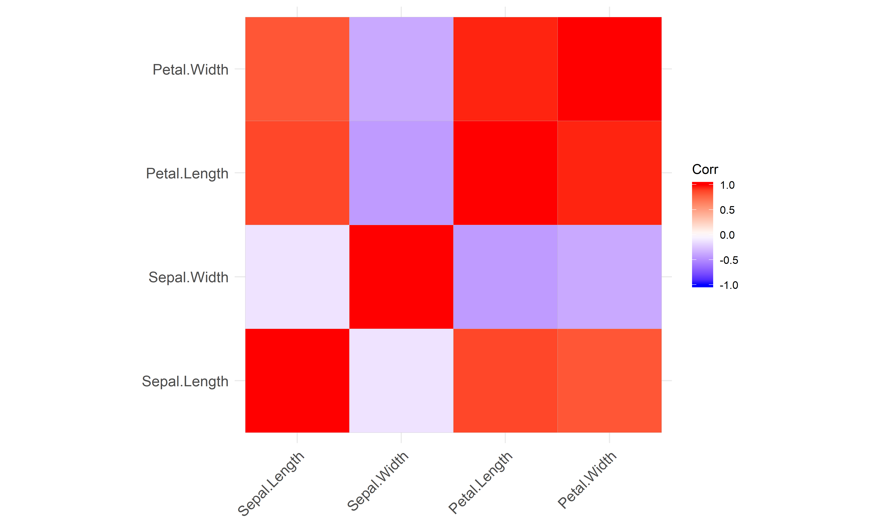
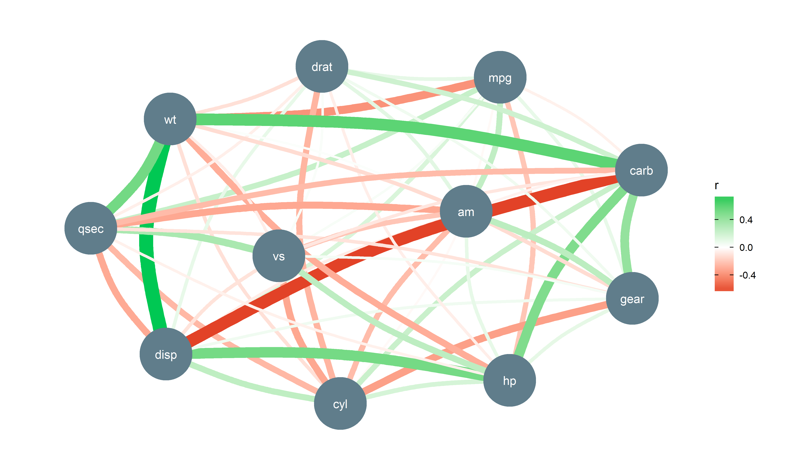

correlation is a lightweight package helping with correlation analysis.
Documentation


Click on the buttons above to access the package documentation and the easystats blog, and check-out these vignettes:
- No vignettes yet :(
Features
The main function is correlation(), which builds on top of cor_test() and comes with a number of possible options.
Correlation details and matrix
cor <- correlation(iris)
cor
## Parameter1 | Parameter2 | r | t | df | p | 95% CI | Method
## -------------------------------------------------------------------------------------
## Sepal.Length | Sepal.Width | -0.12 | -1.44 | 148 | 0.15 | [-0.27, 0.04] | Pearson
## Sepal.Length | Petal.Length | 0.87 | 21.65 | 148 | < .001 | [ 0.83, 0.91] | Pearson
## Sepal.Length | Petal.Width | 0.82 | 17.30 | 148 | < .001 | [ 0.76, 0.86] | Pearson
## Sepal.Width | Petal.Length | -0.43 | -5.77 | 148 | < .001 | [-0.55, -0.29] | Pearson
## Sepal.Width | Petal.Width | -0.37 | -4.79 | 148 | < .001 | [-0.50, -0.22] | Pearson
## Petal.Length | Petal.Width | 0.96 | 43.39 | 148 | < .001 | [ 0.95, 0.97] | PearsonThe output is not a square matrix, but a (tidy) dataframe with all correlations tests per row. One can also obtain a matrix using:
summary(cor)
## Parameter | Petal.Width | Petal.Length | Sepal.Width
## -------------------------------------------------------
## Sepal.Length | 0.82*** | 0.87*** | -0.12
## Sepal.Width | -0.37*** | -0.43*** |
## Petal.Length | 0.96*** | |Note that one can also obtain the full, square and redundant matrix using:
as.table(cor)
## Parameter | Sepal.Length | Sepal.Width | Petal.Length | Petal.Width
## ----------------------------------------------------------------------
## Sepal.Length | 1.00*** | -0.12 | 0.87*** | 0.82***
## Sepal.Width | -0.12 | 1.00*** | -0.43*** | -0.37***
## Petal.Length | 0.87*** | -0.43*** | 1.00*** | 0.96***
## Petal.Width | 0.82*** | -0.37*** | 0.96*** | 1.00***
Grouped dataframes
The function also supports stratified correlations, all within the tidyverse workflow!
iris %>%
select(Species, starts_with("Sepal"), Petal.Width) %>%
group_by(Species) %>%
correlation()
## Group | Parameter1 | Parameter2 | r | t | df | p | 95% CI | Method
## ----------------------------------------------------------------------------------------------
## setosa | Sepal.Length | Sepal.Width | 0.74 | 7.68 | 48 | < .001 | [ 0.59, 0.85] | Pearson
## setosa | Sepal.Length | Petal.Width | 0.28 | 2.01 | 48 | 0.10 | [ 0.00, 0.52] | Pearson
## setosa | Sepal.Width | Petal.Width | 0.23 | 1.66 | 48 | 0.10 | [-0.05, 0.48] | Pearson
## versicolor | Sepal.Length | Sepal.Width | 0.53 | 4.28 | 48 | < .001 | [ 0.29, 0.70] | Pearson
## versicolor | Sepal.Length | Petal.Width | 0.55 | 4.52 | 48 | < .001 | [ 0.32, 0.72] | Pearson
## versicolor | Sepal.Width | Petal.Width | 0.66 | 6.15 | 48 | < .001 | [ 0.47, 0.80] | Pearson
## virginica | Sepal.Length | Sepal.Width | 0.46 | 3.56 | 48 | < .01 | [ 0.20, 0.65] | Pearson
## virginica | Sepal.Length | Petal.Width | 0.28 | 2.03 | 48 | < .05 | [ 0.00, 0.52] | Pearson
## virginica | Sepal.Width | Petal.Width | 0.54 | 4.42 | 48 | < .001 | [ 0.31, 0.71] | PearsonBayesian Correlations
It is very easy to switch to a Bayesian framework.
correlation(iris, bayesian=TRUE)
## Parameter1 | Parameter2 | rho | 89% CI | pd | % in ROPE | BF | Prior
## ------------------------------------------------------------------------------------------------------
## Sepal.Length | Sepal.Width | -0.11 | [-0.24, 0.02] | 91.67% | 43.20% | 0.51 | Cauchy (0 +- 0.33)
## Sepal.Length | Petal.Length | 0.86 | [ 0.82, 0.89] | 100% | 0% | > 999 | Cauchy (0 +- 0.33)
## Sepal.Length | Petal.Width | 0.81 | [ 0.76, 0.85] | 100% | 0% | > 999 | Cauchy (0 +- 0.33)
## Sepal.Width | Petal.Length | -0.42 | [-0.52, -0.31] | 100% | 0% | > 999 | Cauchy (0 +- 0.33)
## Sepal.Width | Petal.Width | -0.35 | [-0.47, -0.24] | 100% | 0% | > 999 | Cauchy (0 +- 0.33)
## Petal.Length | Petal.Width | 0.96 | [ 0.95, 0.97] | 100% | 0% | > 999 | Cauchy (0 +- 0.33)Tetrachoric, Polychoric, Biserial, Biweight…
The correlation package also supports different types of methods, which can deal with correlations between factors!
correlation(iris, include_factors = TRUE, method = "auto")
## Parameter1 | Parameter2 | r | t | df | p | 95% CI | Method
## ------------------------------------------------------------------------------------------------------
## Sepal.Length | Sepal.Width | -0.12 | -1.44 | 148 | 0.30 | [-0.27, 0.04] | Pearson
## Sepal.Length | Petal.Length | 0.87 | 21.65 | 148 | < .001 | [ 0.83, 0.91] | Pearson
## Sepal.Length | Petal.Width | 0.82 | 17.30 | 148 | < .001 | [ 0.76, 0.86] | Pearson
## Sepal.Length | Species.setosa | -0.93 | -29.97 | 148 | < .001 | [-0.95, -0.90] | Biserial
## Sepal.Length | Species.versicolor | 0.10 | 1.25 | 148 | 0.30 | [-0.06, 0.26] | Biserial
## Sepal.Length | Species.virginica | 0.82 | 17.66 | 148 | < .001 | [ 0.77, 0.87] | Biserial
## Sepal.Width | Petal.Length | -0.43 | -5.77 | 148 | < .001 | [-0.55, -0.29] | Pearson
## Sepal.Width | Petal.Width | -0.37 | -4.79 | 148 | < .001 | [-0.50, -0.22] | Pearson
## Sepal.Width | Species.setosa | 0.78 | 15.09 | 148 | < .001 | [ 0.71, 0.84] | Biserial
## Sepal.Width | Species.versicolor | -0.60 | -9.20 | 148 | < .001 | [-0.70, -0.49] | Biserial
## Sepal.Width | Species.virginica | -0.18 | -2.16 | 148 | 0.13 | [-0.33, -0.02] | Biserial
## Petal.Length | Petal.Width | 0.96 | 43.39 | 148 | < .001 | [ 0.95, 0.97] | Pearson
## Petal.Length | Species.setosa | -1.00 | -Inf | 148 | < .001 | [-1.00, -1.00] | Biserial
## Petal.Length | Species.versicolor | 0.26 | 3.27 | 148 | < .01 | [ 0.10, 0.40] | Biserial
## Petal.Length | Species.virginica | 0.93 | 31.09 | 148 | < .001 | [ 0.91, 0.95] | Biserial
## Petal.Width | Species.setosa | -1.00 | -Inf | 148 | < .001 | [-1.00, -1.00] | Biserial
## Petal.Width | Species.versicolor | 0.15 | 1.87 | 148 | 0.19 | [-0.01, 0.31] | Biserial
## Petal.Width | Species.virginica | 0.99 | 112.56 | 148 | < .001 | [ 0.99, 1.00] | Biserial
## Species.setosa | Species.versicolor | -0.88 | -22.35 | 148 | < .001 | [-0.91, -0.84] | Tetrachoric
## Species.setosa | Species.virginica | -0.88 | -22.35 | 148 | < .001 | [-0.91, -0.84] | Tetrachoric
## Species.versicolor | Species.virginica | -0.88 | -22.35 | 148 | < .001 | [-0.91, -0.84] | TetrachoricGaussian Graphical Models (GGMs)
Gaussian graphical models are an increasingly popular technique in psychology, which relationships can be interpreted as partial correlation coefficients.
library(ggraph)
library(tidygraph)
mtcars %>%
correlation(partial = TRUE) %>%
as_tbl_graph() %>%
ggraph(layout = 'kk') +
geom_edge_arc(aes(colour=r, edge_width = abs(r)), strength=0.1) +
geom_node_point(color="#607D8B", size=22) +
geom_node_text(aes(label = name), colour="white") +
scale_edge_color_gradient2(low = "#d50000", high = "#00C853") +
theme_graph() +
guides(edge_width = FALSE) +
scale_x_continuous(expand = expand_scale(c(.10, .10))) +
scale_y_continuous(expand = expand_scale(c(.10, .10)))
Partial Correlations
It also supports partial correlations (as well as Bayesian partial correlations).
Multilevel Correlations
It also provide some cutting, exploratory methods, such as Multilevel (partial) correlations. These are are partial correlations based on linear mixed models that include the factors as random effects. They can be see as correlations adjusted for some group (hierarchical) variability.
iris %>%
correlation(partial = TRUE, multilevel = TRUE) %>%
summary()
## Parameter | Petal.Width | Petal.Length | Sepal.Width
## -------------------------------------------------------
## Sepal.Length | -0.17* | 0.71*** | 0.43***
## Sepal.Width | 0.39*** | -0.18* |
## Petal.Length | 0.38*** | |However, if the partial argument is set to FALSE, it will try to convert the partial coefficient into regular ones.These can be converted back to full correlations: